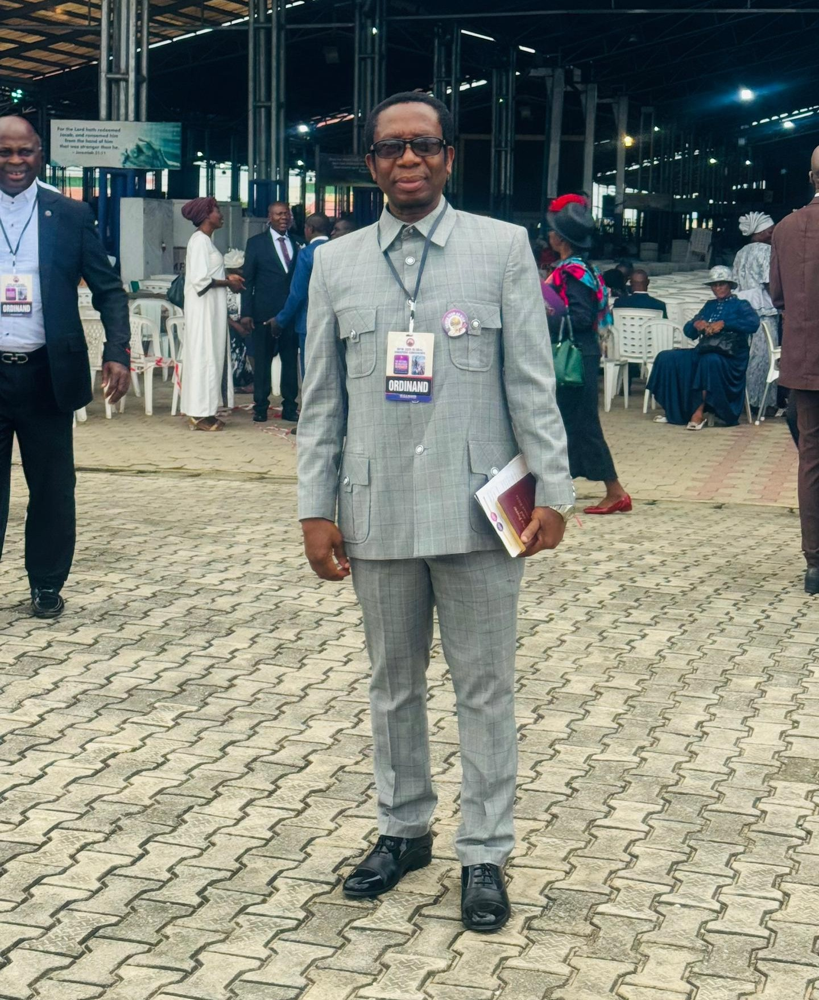
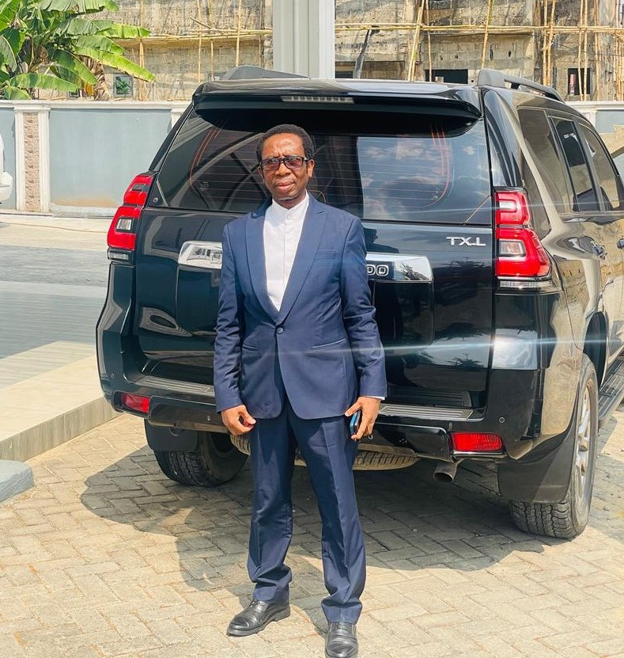

Bachelor of Engineering
A foundation built on technical knowledge, discipline, and problem solving.
Achievements
A record of learning, leadership, service, and professional growth built through discipline, purpose, and consistency.




Milestones
A foundation built on technical knowledge, discipline, and problem solving.
Advanced study that reflects a lifelong commitment to professional growth.
Leadership training that strengthened his ability to guide people and organizations.
Professional recognition within the engineering community.
An honor that speaks to his project, facility, and management excellence.
A leadership role earned through commitment, experience, and trusted stewardship.